Spider-Man Adventures (1994 - 1995)
| Comic Book | Release Date | Cover |
|---|---|---|
| Spider-Man Adventures #1 Night of the Lizard |  | |
| Spider-Man Adventures #2 The Sting of the Scorpion | 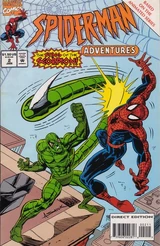 | |
| Spider-Man Adventures #3 The Spider-Slayer | 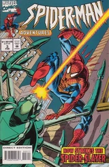 | |
| Spider-Man Adventures #4 Return of the Spider-Slayers | 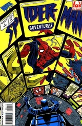 | |
| Spider-Man Adventures #5 The Menace of Mysterio | 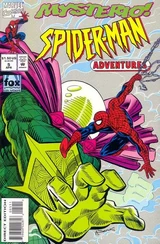 | |
| Spider-Man Adventures #6 Kraven the Hunter! | 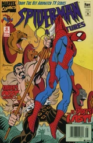 | |
| Spider-Man Adventures #7 Doctor Octopus Armed and Dangerous | 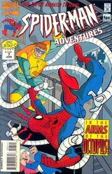 | |
| Spider-Man Adventures #8 The Alien Costume | 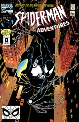 | |
| Spider-Man Adventures #9 The Alien Costume, Part 2: Paint it Black! | 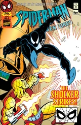 | |
| Spider-Man Adventures #10 Coming Of Venom! | 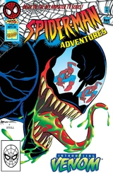 | |
| Spider-Man Adventures #11 The Hobgoblin: Bad Luck & Trouble! | 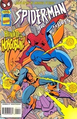 | |
| Spider-Man Adventures #12 Takin' It to the Streets | 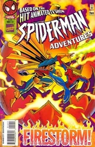 | |
| Spider-Man Adventures #13 Day of the Chameleon | 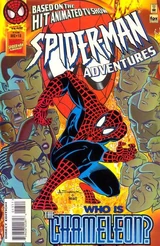 | |
| Spider-Man Adventures #14 Ock Rocks | 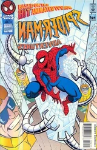 | |
| Spider-Man Adventures #15 Jungle Stalkings | 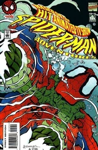 |